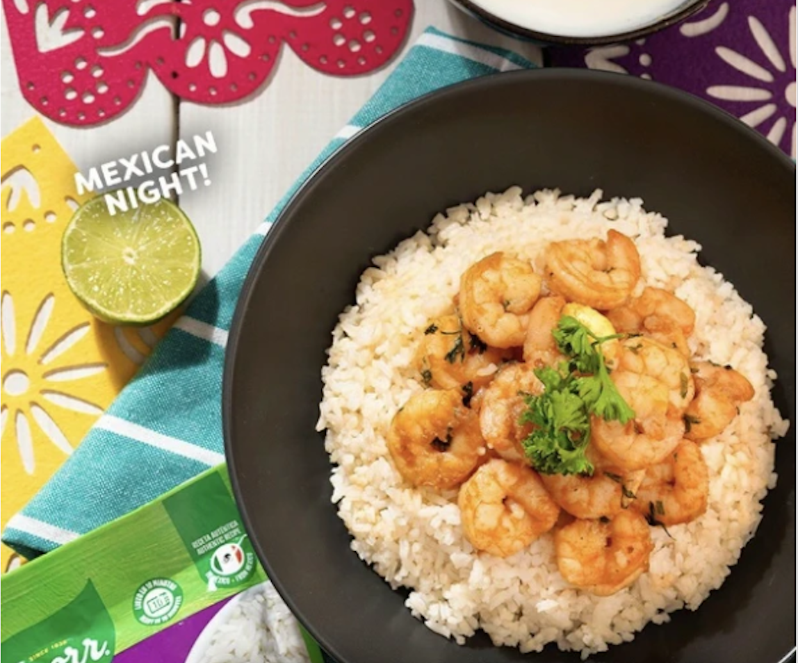

Garlic Shrimp with Mexican Rice

Ingredients
- 1 Knorr Arroz Blanco Sazonado
- 1 kg raw shrimp, peeled and deveined
- 1 tbsp minced garlic
- 1 tbsp butter
- 1 dozen flour tortillas
- ½ cup chopped parsley
- Olive oil
- Lime wedges for serving
Instructions
- Heat olive oil and melt the butter in a skillet over medium heat.
- Add the minced garlic and cook until fragrant.
- Add the shrimp to the skillet and cook until they turn pink and opaque.
- Stir in the chopped parsley and cook for one more minute.
- Cook a Knorr Arroz Blanco Sazonado pouch per the package instructions. Let it rest for 5 minutes after cooking.
- Serve the garlic shrimp over a bed of white garlic-flavored Mexican rice.
- Serve with lime wedges on the side or squeeze lime juice over the dish. Enjoy!
Nutrition Facts
| Portion | Calories | Fat |
|---|
| 1 serving | 400 | 14 g |